|
|
HELP FIND THE FOLLOWING LOCATIONS
PAGE 75
DEPARTMENT S:
The Trojan Tanker
(Ray Austin: June1968)
Unknown 1:
Another tanker is hijacked
in France (stock footage South of France) on highway 79 between Aux and Frejus.
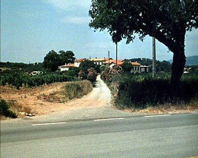
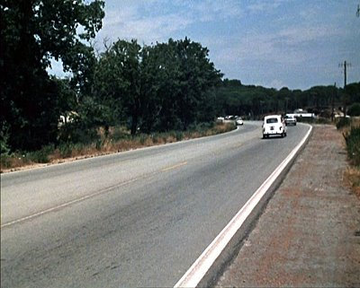
2440 Av. Atlântica, Copacabana, Rio de Janeiro, Brazil: Jason and Stewart watch he girl from their hotel room in nice.
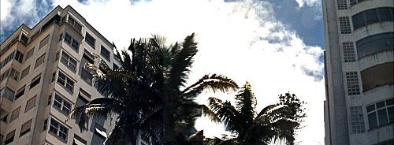
Portofino, Italy: Stewart goes down to the beach to introduce himself to Veronica Bray.
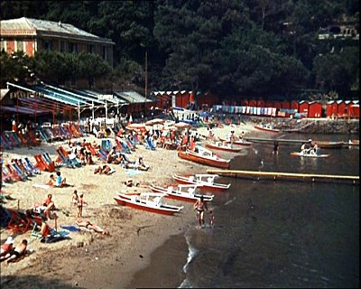
Copacabana
Beach, Rio de Janeiro, Brazil:
Stewart waits by the beach for the girl, but she is found dead.
(Idenified by Pierre Alfonsi, July 2012)
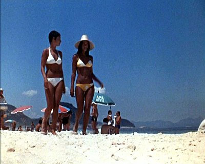
Morgins, Valais, Switzerland:
Stewart Annabelle and
Jason go to the Alps to and discuss the new Mark Caine
novel.
(Identified by Sietse Postma, April 2025)
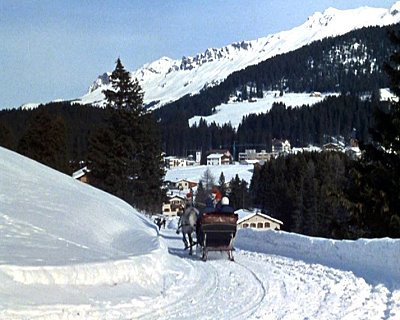
DEPARTMENT S:
A Cellar Full of
Silence (John Gilling:
June 1968)
Cannes, Alpes-Maritimes,
France:
Stewart Sullivan goes to
meet Sir Curtis at a holiday resort where he is attending a conference
and
discuss the case.
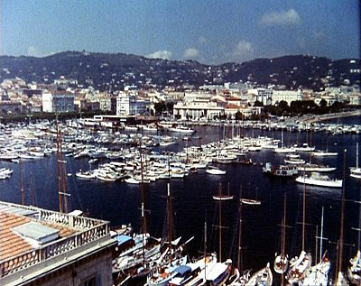
Unknown 1: A car dragged from a lake the body of Justin Thurston is found inside.
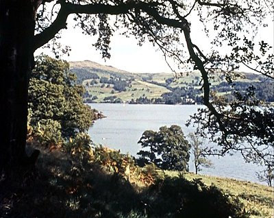
Unknown 2: The home in Avenue Road, St John’s wood where Libby Spear is being held a virtual prisoner. Tronson’s house. Annabelle goes to the house looking for information about Justin Thursto.
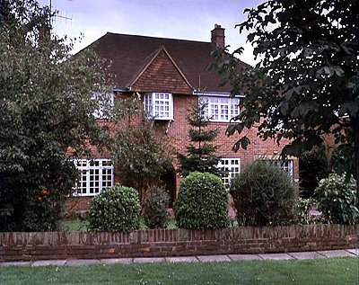
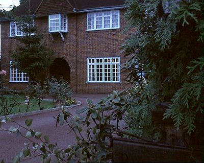
Netherwood Street, NW3: Jason King goes in search of Walter Pally in his Bentley.
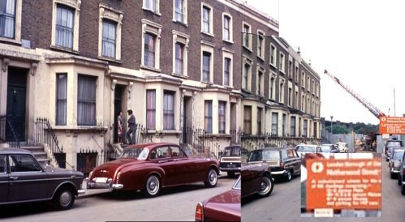
 Marishka
von Saatz - " I think the sign reads - London Borough of Ca[mden??]
Netherwood Street. Today Netherwood street is fenced back foliage down
one side
and nasty modern (1980s/90s) housing on the other so no way to tell at
the
moment A large bomb took out the middle of the street at the junction
with
Linseed Street in 1940 so it's possible that the yard shown is the
resultant
cleared area."
Marishka
von Saatz - " I think the sign reads - London Borough of Ca[mden??]
Netherwood Street. Today Netherwood street is fenced back foliage down
one side
and nasty modern (1980s/90s) housing on the other so no way to tell at
the
moment A large bomb took out the middle of the street at the junction
with
Linseed Street in 1940 so it's possible that the yard shown is the
resultant
cleared area."
Unknown 4: After detonating an explosive device Kent goes to see the result. Jason King at a phone box by an old mill.
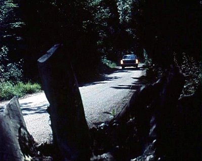
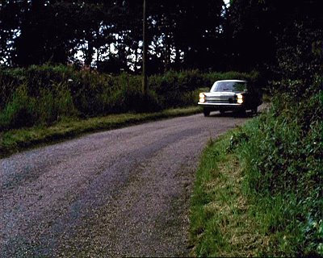
O6: Rowley
Lane, Well End - After
losing contact with Jason Stewart races in the Bentley to the telephone
box.
(Idenified by Vice Cox, April 2014)
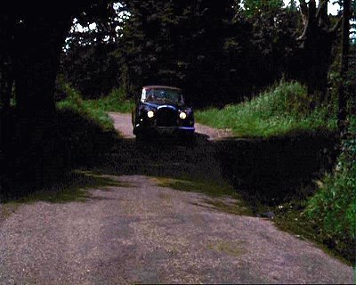
Unknown 5: After losing contact with Jason Stewart races in the Bentley to the telephone box.
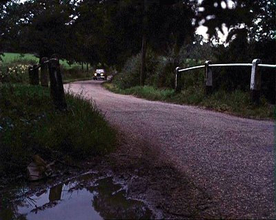
Acacia Road
NW8 (looking at the junction with
Woronzow Road): Sullivan and King race to Tronson’s
house in St Johns Wood in
Jason’s Bentley.
(Identified by Geoff Dodd, August 2012)
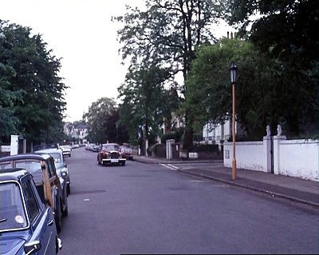
DEPARTMENT S:
The Pied Piper Of Hambledown
(Roy Ward Baker: May 1968)
Tilbury Docks:
Stewart goes on board the
ship which Sir Curtis is taking to a diplomatic mission. He has time to
brief
Stewart before the ship sails.
Identified by Phil Brown, February 2016

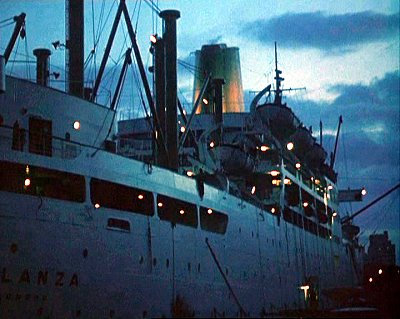
Well End
Road, nr junction with Potter's Lane: Aboard
Jason’s Bentley,
Annabelle takes Jason and Stewart to see where the missing can of white
paint
was used.
Identified by Geoff Dodd, March 2018.
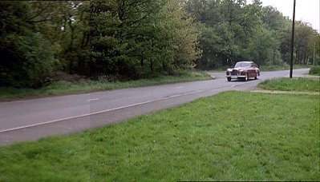
DEPARTMENT S:
Soup of the Day
(Leslie Norman: Spring 1969)
Crawford Street, W1:
Villers
and
Greene drive to Rupert’s boutique. (no longer a through road)
Identified by Geoff Dodd, March 2018.
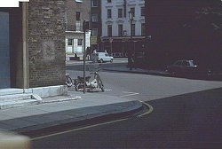
DEPARTMENT S:
Spencer Bodily is Sixty Years Old
(Leslie Norman: 1969)
Unknown 1:
Jason looks out from Ingrid
Von Epsdorf’s
house to admire the grounds.
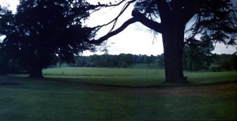
L3: British
Rail Centre, The Grove, The Grove Park, Grove Mill Lane, Watford:
Jason manages to steal a
box of BHT from Ingrid Von Epsdorf’s
house.
(Identified by Geoff Dodd, May 2018)

Tzuk Tamrur - half-way along(31), the Arad-Sodom road, Southern District, Israel: Jason King is travelling across the desert in a Land Rover with a companion when his adventure is rudely interrupted by a group of nomads.
Unknown 2: Jason King is travelling across the desert in a Land Rover with a companion when his adventure is rudely interrupted by a group of nomads.
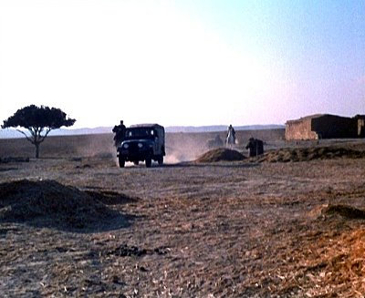
Carlton House Terrace, London SW1 :
Stewart Sullivan meets
Sir Curtis at the opera do discuss the Spencer Bodily case (seen from The Mall).
(Identified by Michael Richardson and Sietse Postma, December 2023)
12
Winnington Road London, N2: The
house where Doctor George Kendall is keeping his Guinea Pigs, Ralph and
Albert.
All are expecting Spencer Bodily to return soon.
(Identified by Wyn
Roberts, August 2004)
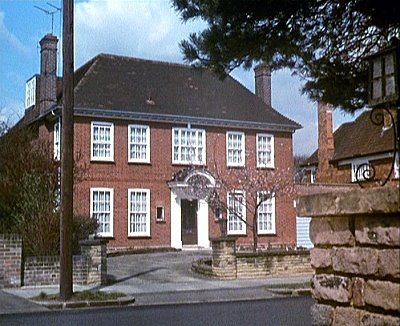
DEPARTMENT S:
The Duplicated Man (Paul Dickson:
Spring 1969)
G33: Ganwick Farm on
Wagon Road, Barnet:
Russian agents in a “Joe’s
Television Service” van watch as Stewart Sullivan drives past on his
way to
find Jason King who has just jumped with a parachute.
(Identified by Geoff Dodd, November 2023)
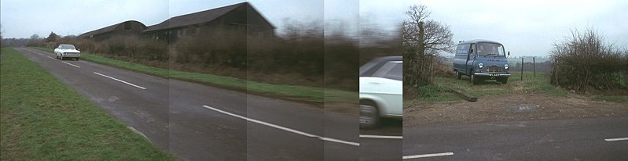
Unknown 1: Troops are sent to search the woods for Anthony James Harvey’s parachute.
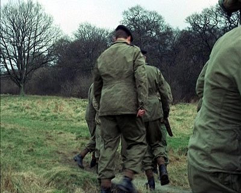
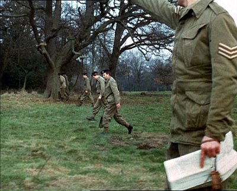
 Most
probably O21: Bakers Hill/Hadley Wood Road, Hadley Wood.
Most
probably O21: Bakers Hill/Hadley Wood Road, Hadley Wood.
Chester
Close North, London NW1:
Annabelle drives her
Lotus Elan
into a side street and hides her car in a garage in order to loose the
perusing
Russian agents.
Identified by Geoff Dodd, January 2018
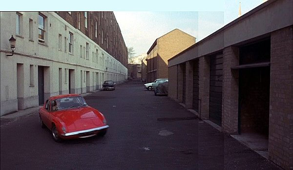
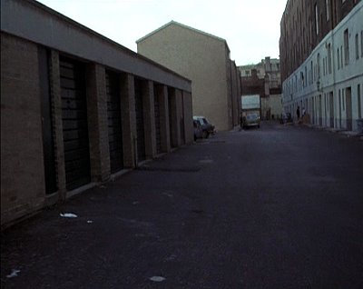
Think you know a spot? Need a bigger image? Email me.
< Previous | Index | Avengerland | Next >
Copyright © 2023 Anthony R. McKay